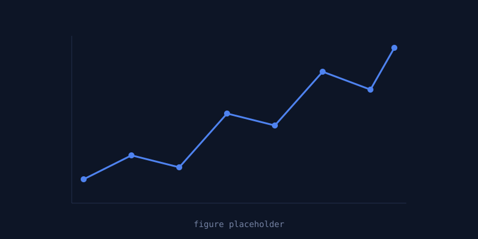
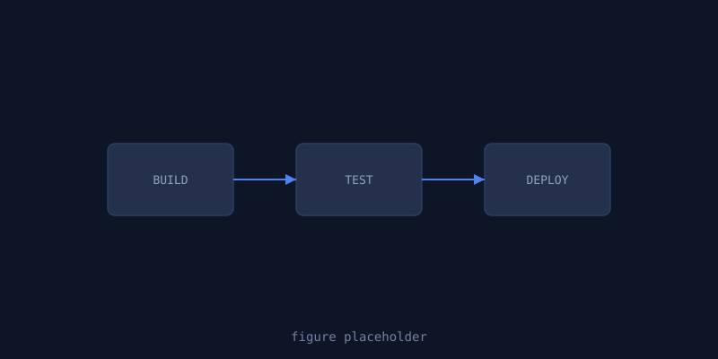
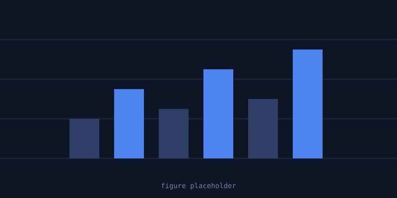

Placeholder: describe how you track model experiments, datasets, and metrics across iterations.

Placeholder: describe your pipeline for testing, packaging, and deploying models to production.

Placeholder: describe how you monitor model performance and data drift once in production.